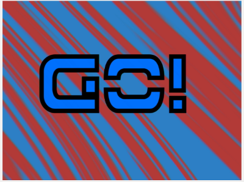
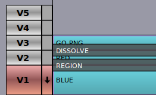

TWORZENIE ZŁOŻONYCH OBRAZÓW
Edytor filmów Flowblade wykorzystuje Compositors do miksowania obrazów z dwóch różnych ścieżek. Łącząc wiele ścieżek i wielu Kompozytorów, można uzyskać złożone obrazy złożone.
- Wprowadzenie
- Workflow Compositor
- Compositor są wykonywane od góry do dołu
- Rendering A Composited Frame
- PRZYKŁAD: Tworzenie 3-warstwowego kompozytu
- Elementy multimedialne i pożądany wynik
- Kolejność warstw w stylu Gimp / Photoshop daje zły wynik
- Popraw kolejność warstw, gdy kolejność kompozycji jest od góry do dołu
Wprowadzenie
Kompozytory mają ścieżkę źródłową i docelową.
Na osi czasu Compositor jest wyświetlany jako ciemny prostokątny obiekt, który jest wyświetlany na górze dwóch ścieżek. Ścieżka źródłowa to zawsze ta powyżej Kompozytora, ale Ścieżka celu może być dowolną z poniższych ścieżek.
Parametry definiujące wynikowy kompozyt edytowane są w zakładce Compositors .
Istnieje podtyp Compositors o nazwie Blendery. Blendery wykorzystują standardowe mieszanki, takie jak Add, Softlight i Darken, ale nie oferują żadnych transformacji, ani żadnej metody kontrolowania ilości mieszanki.
Workflow Compositor
- Tworzenie Compositor
- Kliknij Prawy przycisk myszy na dowolnym klipie na ścieżkach od V5 do V2 i wybierz na przykład Dodaj Compositor -> Dissolve lub Dodaj Blender -> Softlight z popupmenu, aby utworzyć nowego Compositor.
- Trimmimg lub przenoszenie Compositor
- Aby przyciąć punkt początkowy i końcowy Compositora: Naciśnij i przeciągnij Lewą Mysz przy dowolnym końcu Kompozytora na Osi czasu.
- Aby przenieść Compositor: Naciśnij i przeciągnij Left Mouse w środku Compositor na osi czasu.
- Edycja parametrów Compositor na karcie Compositors
- Kliknij dwukrotnie Compositor za pomocą lewej myszy .
- Kliknij przycisk Prawy przycisk myszy na dowolnym komponencie Compositor i wybierz opcję Otwórz w edytorze Compositor
- Edytuj parametry za pomocą edytorów wartości.
- Usuwanie Compositor
- Kliknij przycisk Lewa mysz na dowolnym komponencie Compositor, aby go wybrać, a następnie naciśnij przycisk Usuń .
Compositor są wykonywane od góry do dołu
W edytorze filmów Flowblade kolejność renderowania jest od góry do dołu , zamiast z dołu do góry, jak w Gimp lub Photoshop. Podczas próby określonego typu wielowarstwowych kompozytów daje to wyniki, które wydają się nieintuicyjne, chyba że użytkownik jest świadomy renderowania kolejności Compositors.Rendering A Composited Frame
- Dla każdej klatki sprawdza się, czy na najwyższej ścieżce znajduje się Kompozytor pokrywający tę ramkę.
- Jeśli zostanie znaleziony taki Compositor, wykonaj kompozyt na torze docelowym.
- Ramka na torze docelowym została zmieniona i jeśli ta ramka jest używana jako źródło, używana jest zmieniona wersja
- Sprawdź, czy klatka na następnej ścieżce poniżej ma komponent i jeśli odnajdziesz Compositor, zrób złożony obraz
- Odbywa się to dla każdej ścieżki.
- Obraz wyjściowy jest z najwyższej ścieżki, która ma nośnik na ramie i nie ma kompostora na ramie.
PRZYKŁAD: Tworzenie 3-warstwowego kompozytu
W tym przykładzie demonstrujemy, w jaki sposób Compositor od góry do dołu zamówienie wpływa na kompozycję. Staramy się, aby słowo "GO" pojawiło się na 2-kolorowym tło wykonane przez połączenie czerwonych i niebieskich klipów kolorystycznych za pomocą funkcji "Free Stripes".
Elementy multimedialne i pożądany wynik
Aby uzyskać przezroczystość alfa, grafika GO.PNG musi być skomponowana za pomocą funkcji "Dissolve".
Klipy: RED i NIEBIESKI klip kolorów i grafika GO.PNG z przezroczystością alfa

Żądany wynik
Kolejność warstw stylu Gimp / Photoshop daje zły wynik
Tutaj rozmieściliśmy klipsy na torach, ponieważ układaliśmy warstwy w Gimpie.
Kolejność warstw stylu Gimp
To, co dzieje się tutaj, polega na tym, że pierwszy "GO.PNG" jest połączony z klipem kolorowym "RED", a wynikowy obraz jest łączony za pomocą "Free Stripes" na wierzchu "BLUE" Kolorowego klipu. Otrzymujemy zły wynik.
Zły wynik

Popraw kolejność warstw, gdy kolejność kompozycji jest od góry do dołu
Tutaj ułożyliśmy klipy w odpowiedniej kolejności dla pożądanego rezultatu.
Poprawna kolejność warstw

Tutaj klip koloru "RED" jest najpierw łączony za pomocą "Free Stripes" w "BLUE" Color Clip. Następnie "GO.PNG" jest umieszczany na wierzchu wynikowego obrazu (który jest już renderowany na ścieżce V1) za pomocą funkcji "Dissolve", aby uzyskać ostateczny obraz wyjściowy.
Ścieżka docelowa w kompilatorze "Region" to V1, ścieżka źródłowa to V3

Żądany wynik